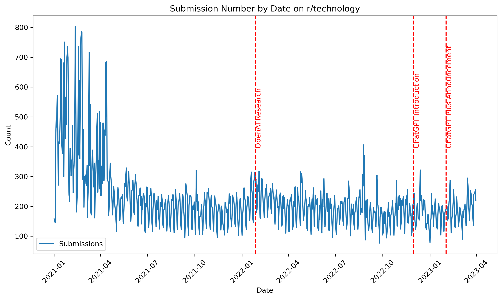
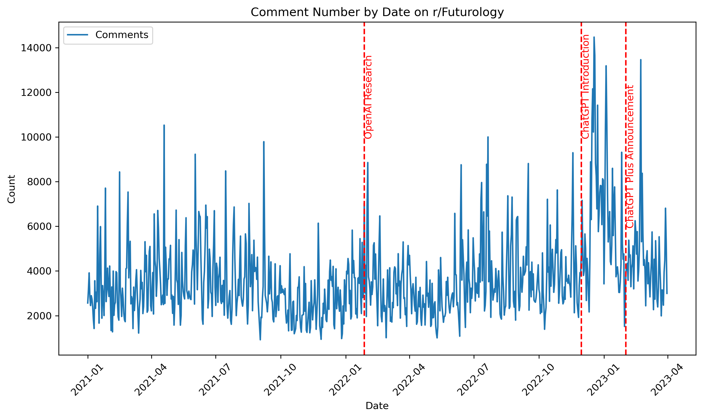
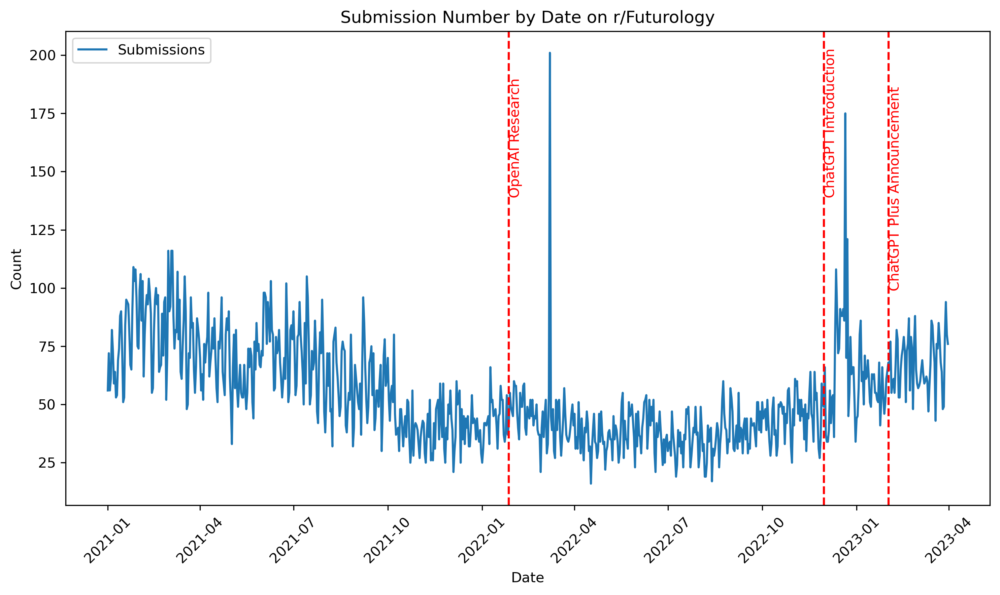
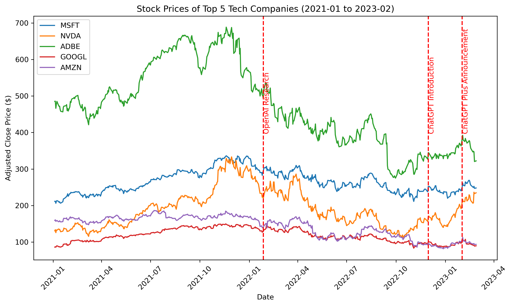
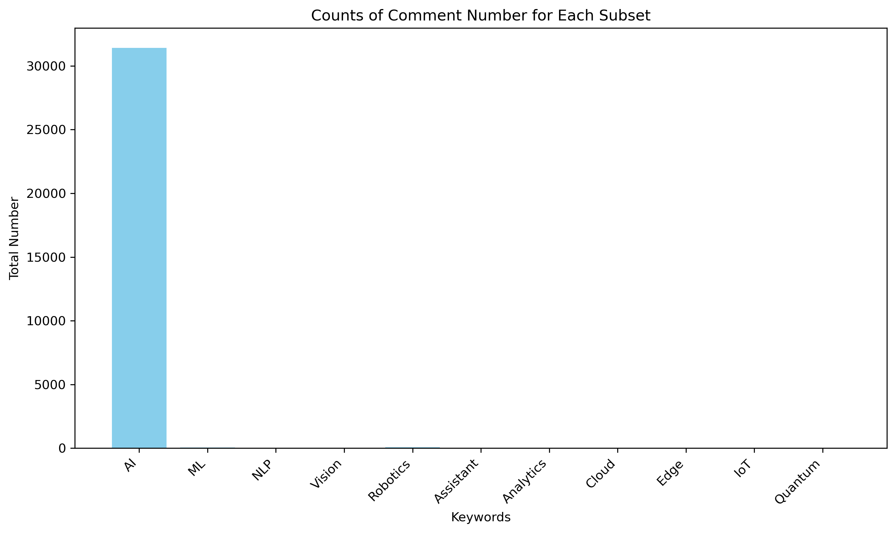
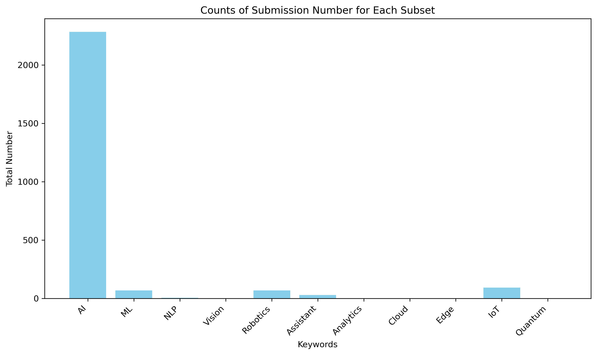
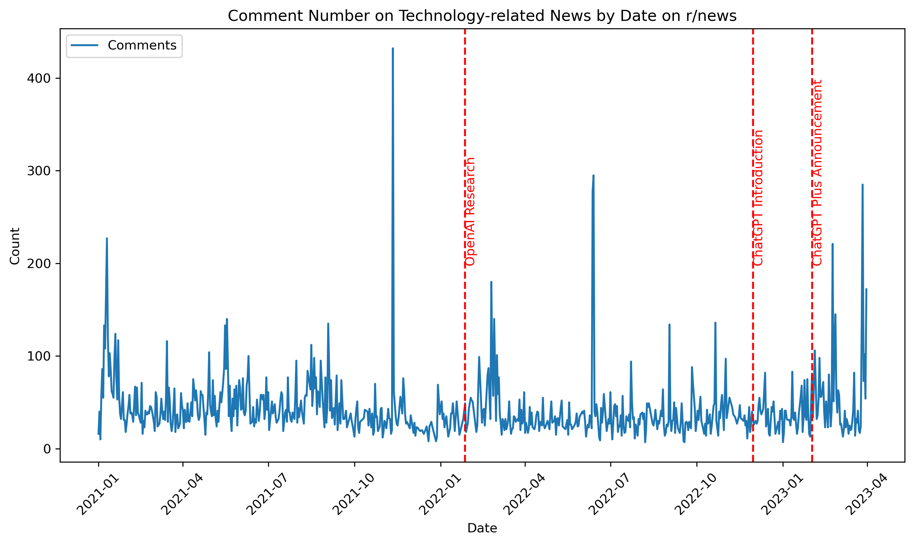
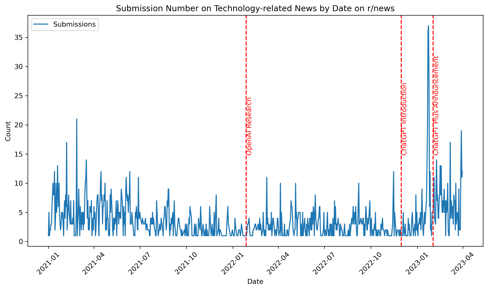
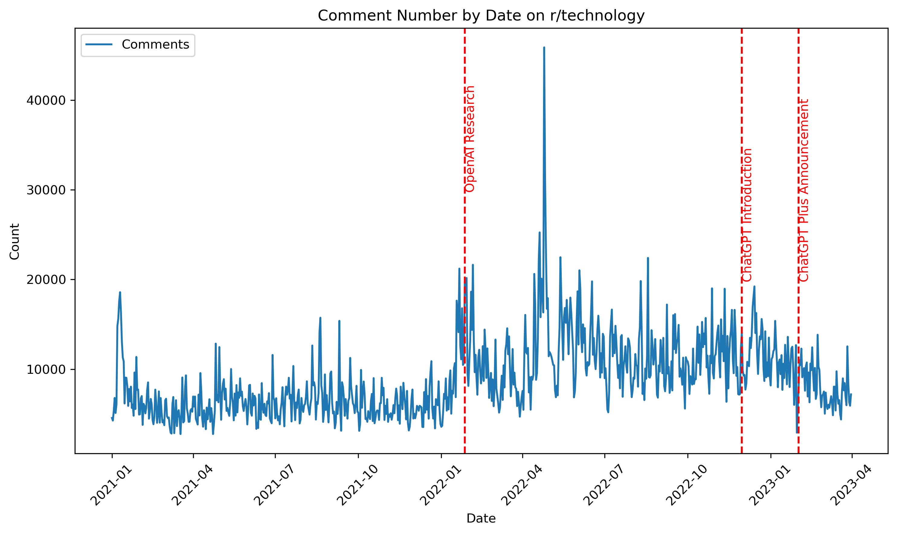

Exploratory Data Analysis
2. Analyzing Fluctuations in Technology Discourse Over Time
In this section, we delve into the temporal dynamics of technology discourse within the r/technology and r/Futurology subreddits from January 2021 to February 2023. Our analysis includes four time-series plots for submissions and comments, allowing us to identify peaks and troughs in discussion volume and to assess the impact of significant events in the tech field.
Discussion in r/technology:
Submission Fluctuations:
Analyzing submission fluctuations reveals a striking pattern. From January to April 2021, there is a remarkable surge in discussion volume, which gradually stabilizes thereafter. Despite occasional peaks in September 2021, December 2022, and February 2023, the discussion volume remains notably lower compared to the initial surge observed in early 2021. This suggests a shift in submission dynamics over time, with intermittent peaks punctuating an overall decline in discussion volume.

Discussion in r/Futurology:
Comments Fluctuations:
In contrast to r/technology, the fluctuation pattern in the r/Futurology subreddit exhibits distinct characteristics. Following the significant events related to OpenAI, notably the release of ChatGPT, there is a marked increase in comment volume, particularly evident after November 2022. Subsequent peaks in discussion volume coincide with the occurrence of these events, with the highest engagement observed between November 2022 and February 2023. This suggests a strong correlation between OpenAI’s developments and heightened discussion activity within the r/Futurology subreddit.

Submission Fluctuations:
Similarly, the submission fluctuation pattern mirrors that of comments, indicating a surge in discussion volume following the introduction of ChatGPT. The events in November 2022 and February 2023 precipitate a substantial increase in submission activity, with peak discussion volume recorded during these periods. This underscores the significant impact of ChatGPT on stimulating discussion and engagement within the r/Futurology community.

In summary, our analysis reveals nuanced patterns of discussion volume fluctuations in both r/technology and r/Futurology, influenced by significant events in the tech field, particularly those related to OpenAI’s advancements. These insights shed light on the evolving dynamics of technology discourse on Reddit, highlighting the role of emerging technologies in shaping online discussions and community engagement.
3. Exploring Stock Price Trends of Top 5 Tech Companies (January 2021 - February 2023)
In this segment, we extend our analysis beyond discussion volume to investigate whether significant innovation events impacting other companies influence the stock prices of traditional tech giants. Our selected companies for scrutiny include Microsoft, Nvidia, Adobe, Alphabet, and Amazon. By examining their stock price changes from January 2021 to February 2023, we aim to discern any discernible trends coinciding with key innovation events.
Our findings align with our initial hypothesis. Preceding January 27, 2022, the stock prices of these tech companies exhibit an overall upward trajectory or remain steady. However, following the occurrence of OpenAI’s significant events, particularly on January 27, 2022, we observe a notable downturn in stock prices across the board. Particularly noteworthy is the evident decline in stock prices for Amazon and Google (Alphabet) post-OpenAI events. Interestingly, Nvidia, Adobe, and Alphabet witness a decrease in stock prices following January 27, 2022, but around October 2022, their stock prices stabilize or experience a slight increase, seemingly unaffected by the OpenAI events.

Further analysis may be warranted to unravel the underlying factors contributing to the divergent stock price trends among these companies. Factors such as market sentiment, company-specific developments, and broader industry trends could all play a role in shaping stock price dynamics. Moreover, exploring the potential impact of OpenAI’s innovations on market perception and investor sentiment may offer valuable insights into the observed stock price fluctuations.
Our exploration of stock price trends among top tech companies provides valuable insights into the interplay between innovation events and market dynamics. By examining the responses of leading tech firms to significant industry developments, we gain a deeper understanding of how innovation influences market behavior and investor sentiment. Such insights are crucial for investors, policymakers, and industry stakeholders seeking to navigate the ever-evolving landscape of the technology sector.
4. Exploring Technology Themes in r/news Subreddits
In this section, we delve into the world of technology-related news within the r/news subreddit. Our objective is to filter the vast array of news articles to focus solely on technology-related content. To achieve this, we employ Natural Language Processing (NLP) techniques, leveraging predefined keywords and 11 distinct themes within the technology domain.
Defined Themes and Keywords:
We have defined 11 thematic areas along with their corresponding keywords to capture various facets of technology:
| Theme | Keywords |
|---|---|
| Artificial Intelligence | artificial intelligence, ai, chatgpt, gpt, openai, intelligence, machine intelligence, virtual intelligence |
| Machine Learning | machine learning, ml, deep learning, neural networks, pattern recognition, predictive modeling, statistical learning |
| Natural Language Processing | natural language processing, nlp, large language model, language understanding, text analysis, speech recognition |
| Computer Vision | computer vision, visual recognition, image processing, object detection, scene understanding |
| Robotics | robotics, autonomous vehicles, self-driving cars, robotic systems, automated vehicles |
| Virtual Assistants | virtual assistants, chatbots, conversation agents, automated helpers |
| Analytics | big data analytics, data analysis, data mining, data insights |
| Cloud Computing | cloud computing, cloud services, cloud platforms, cloud infrastructure |
| Edge Computing | edge computing, edge devices, edge analytics, edge networks |
| Internet of Things | internet of things, iot, smart devices, connected devices |
| Quantum Computing | quantum computing, quantum algorithms, quantum cryptography, quantum networks |
Filtering and Analysis:
After filtering the news articles using our predefined keywords, we obtain 31,402 records in the comment division, representing 0.15% of the total news count, and 2,700 records in the submission division, comprising 0.31% of the total news count. Subsequently, we categorize these records into different themes to discern prevailing trends in technology-related news coverage.
Insights:
Comments Division:
- The analysis reveals that the predominant theme across all news articles is Artificial Intelligence (AI). Other topics such as Machine Learning, Robotics, Virtual Assistants, and Internet of Things are comparatively less represented.
- Notably, there are no news articles directly related to themes such as Computer Vision, Analytics, Cloud Computing, Edge Computing, or Quantum Computing during the period from January 2021 to February 2023.

Submission Division:
- Similarly, the majority of submissions also revolve around the theme of Artificial Intelligence (AI). However, there is a slightly broader representation of other themes such as Machine Learning, Internet of Things, Robotics, and Virtual Assistants.
- Conversely, no submissions directly address themes such as Quantum Computing, Edge Computing, Cloud Computing, Analytics, or Computer Vision during the specified time frame.

Limitations:
It’s important to acknowledge potential biases and limitations in our approach. We may have overlooked colloquial expressions or omitted certain keywords, leading to underrepresentation of specific themes. Additionally, the nature of social media platforms like Reddit may influence the types of news articles shared and discussed, further impacting our analysis.
Despite these limitations, our exploration provides valuable insights into the prevalent technology themes within the r/news subreddit during the specified period.
5. Analyzing Technology News Coverage Over Time
In this section, we aim to dissect the dynamics of technology news coverage within the r/news subreddit over time. Our focus is on understanding whether significant technology events prompt an upsurge in the discussion volume of technology-related news articles.
Insights from Comments Division:
Upon analyzing the comment division, several notable peaks in technology news discussion emerge, particularly in November 2021, February 2022, June 2022, and February 2023. These spikes in discussion volume coincide with significant events in the technology landscape, such as the introduction of ChatGPT Plus. Interestingly, despite the introduction of ChatGPT, the discussion volume remains consistently high, indicating sustained interest and engagement within the community.

Insights from Submission Division:
Contrary to the comments division, the submission volume exhibits a different trend. Following the first OpenAI event, there is minimal change in submission volume. However, after the introduction of ChatGPT and the subsequent announcement of ChatGPT Plus, we observe a steady increase in submission volume. This culminates in a peak in January 2023, suggesting that ChatGPT’s introduction has indeed influenced the focus and reporting of technology-related news within the subreddit.

Our analysis unveils the nuanced interplay between significant technology events and news coverage within the r/news subreddit. While spikes in discussion volume are observed following key events, the impact varies between the comments and submission divisions. While ChatGPT’s introduction has led to sustained engagement in discussions, it has also catalyzed an increase in the reporting of technology-related news articles. These findings underscore the profound influence of technological advancements on social media discourse and news reporting practices.
Comments Fluctuations:
Upon investigating comment fluctuations in the
r/technologysubreddit, we observe a noticeable uptick in discussion volume following the release of OpenAI’s research on InstructGPT models on January 27, 2022. However, this surge is short-lived, with discussion volume quickly stabilizing thereafter. Subsequently, a peak in comments occurs around May 2022, suggesting heightened engagement during this period. Interestingly, the introduction of ChatGPT and ChatGPT Plus on November 30, 2022, and February 1, 2023, respectively, does not lead to significant changes in comment volume. However, it’s important to note that the decrease in discussion volume post-February 1, 2023, may be attributed to data limitations, as the dataset may not capture the latest activity accurately.